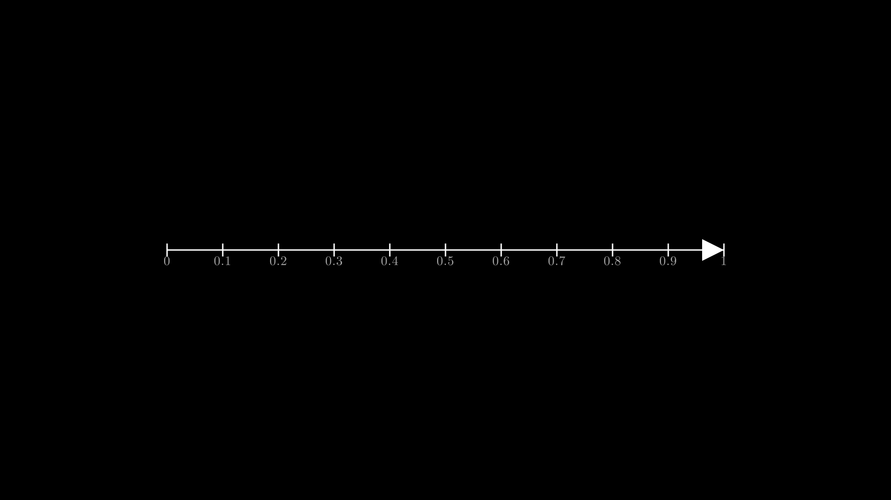
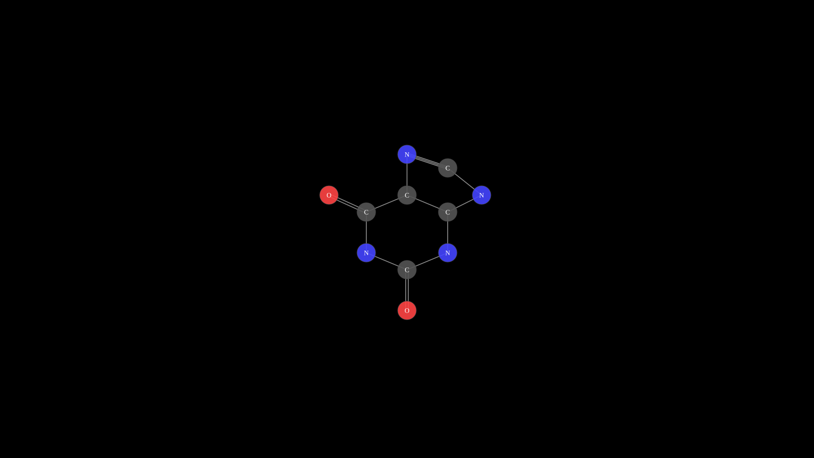
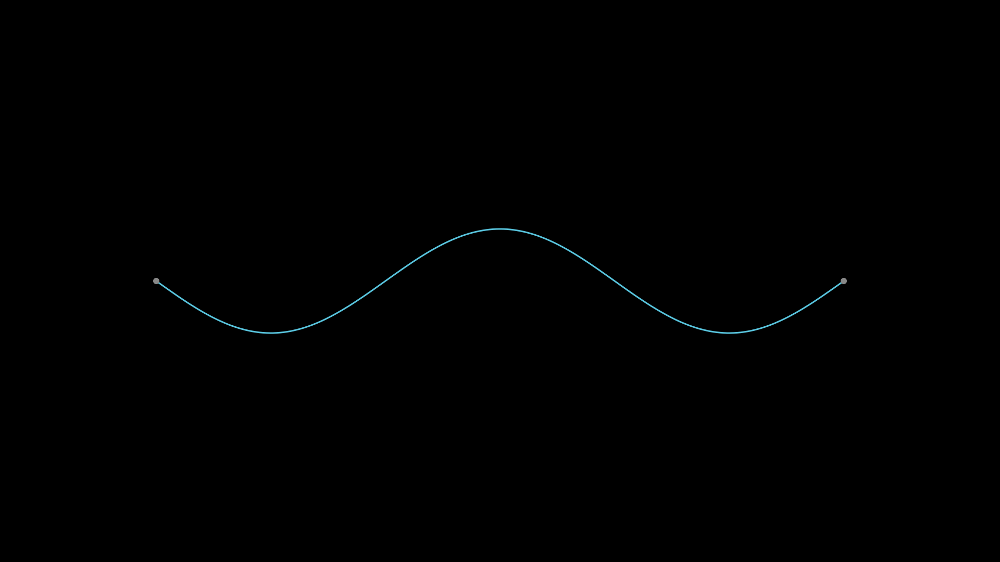
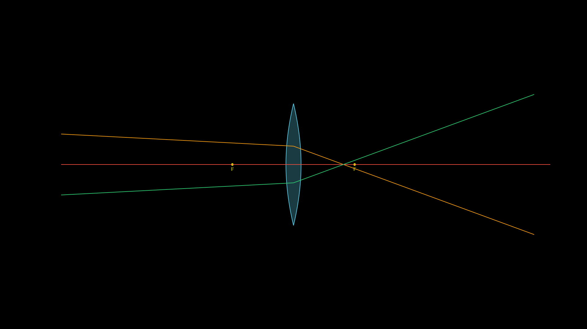

Science¶
Scientific visualization classes. Higher-level classes such as
NeuralNetwork, Pendulum, and StandingWave
combine geometry with time-varying animation.
UnitInterval¶
- class UnitInterval(x=360, y=540, length=600, tick_step=0.1, show_labels=True, font_size=18, creation=0, z=0, **styling_kwargs)
Convenience wrapper that returns a
NumberLinepre-configured for the[0, 1]range – commonly used for probabilities and normalized parameters.- Parameters:
x (float) – Left edge x-position.
y (float) – Y-position.
length (float) – Line length in pixels.
tick_step (float) – Spacing between ticks (in the 0–1 range).
show_labels (bool) – Show numeric tick labels.
font_size (float) – Font size for tick labels.
creation (float) – Creation time.
z (float) – Z-index for layering.
styling_kwargs – Passed through to
NumberLine.
Note
UnitIntervaluses__new__and returns aNumberLineinstance directly, soisinstance(UnitInterval(), NumberLine)isTrue.Example: UnitInterval

"""UnitInterval: probability axis.""" from vectormation.objects import * v = VectorMathAnim() v.set_background() ui = UnitInterval(x=360, y=540, length=1200, tick_step=0.1) v.add(ui) v.show(end=0)
Molecule2D¶
- class Molecule2D(atoms, bonds=None, scale=80, cx=960, cy=540, atom_radius=20, font_size=16, creation=0, z=0)
Simple 2D molecule visualization built from atom positions and bond connectivity. Atoms are drawn as colored circles (element-specific palette) with text labels, and bonds are rendered as single, double, or triple parallel lines.
- Parameters:
atoms (list) – List of
(element_symbol, x, y)tuples where x and y are in abstract units (scaled by scale).bonds (list) – List of
(i, j)or(i, j, order)tuples. i and j are zero-based atom indices; order defaults to 1 (single bond). Use 2 for double bonds and 3 for triple bonds.scale (float) – Pixels per abstract unit.
cx (float) – Center x-position of the molecule on canvas.
cy (float) – Center y-position of the molecule on canvas.
atom_radius (float) – Radius of each atom circle.
font_size (float) – Font size for element labels.
creation (float) – Creation time.
z (float) – Z-index for layering.
Built-in atom color palette:
Symbol
Color
Description
C
#555Carbon
H
#fffHydrogen
O
#FF4444Oxygen
N
#4444FFNitrogen
S
#FFFF00Sulfur
P
#FF8800Phosphorus
F
#00FF00Fluorine
Cl
#00FF00Chlorine
Br
#882200Bromine
I
#8800FFIodine
Example: Molecule2D

"""Molecule2D: caffeine molecule.""" from vectormation.objects import * v = VectorMathAnim() v.set_background() # Caffeine (C8H10N4O2) - approximate 2D layout caffeine = Molecule2D( atoms=[ ('N', -1.2, 0.7), # 0 N1 ('C', 0.0, 1.2), # 1 C2 ('N', 1.2, 0.7), # 2 N3 ('C', 1.2, -0.5), # 3 C4 ('C', 0.0, -1.0), # 4 C5 ('C', -1.2, -0.5), # 5 C6 ('N', 0.0, -2.2), # 6 N7 ('C', 1.2, -1.8), # 7 C8 ('N', 2.2, -1.0), # 8 N9 ('O', -2.3, -1.0), # 9 O (on C6) ('O', 0.0, 2.4), # 10 O (on C2) ], bonds=[ (0, 1), (1, 2), (2, 3), (3, 4), (4, 5), (5, 0), # six-membered ring (4, 6), (6, 7), (7, 8), (8, 3), # five-membered ring (5, 9, 2), # C6=O double bond (1, 10, 2), # C2=O double bond (6, 7, 2), # C8=N7 double bond ], scale=80, cx=960, cy=540, atom_radius=22, font_size=16, ) v.add(caffeine) v.show(end=0)
NeuralNetwork¶
- class NeuralNetwork(layer_sizes, cx=960, cy=540, width=800, height=500, neuron_radius=16, neuron_fill='#58C4DD', edge_color='#888', edge_width=1, creation=0, z=0)
Neural network diagram with layers of neurons connected by fully-connected edges. Supports labeling input/output layers, activating individual neurons, animating forward propagation, and highlighting specific paths.
- Parameters:
layer_sizes (list[int]) – Number of neurons per layer (e.g.
[3, 5, 2]for a 3-layer network).cx (float) – Center x-position.
cy (float) – Center y-position.
width (float) – Total diagram width in pixels.
height (float) – Total diagram height in pixels.
neuron_radius (float) – Radius of each neuron circle.
neuron_fill (str) – Fill color for neurons.
edge_color (str) – Stroke color for connecting lines.
edge_width (float) – Stroke width for connecting lines.
creation (float) – Creation time.
z (float) – Z-index for layering.
- label_input(labels, font_size=20, buff=30, **kwargs) NeuralNetwork¶
Add text labels to the left of each input-layer neuron.
- Parameters:
labels (list) – List of label strings (one per input neuron).
font_size (float) – Font size for labels.
buff (float) – Horizontal buffer between neuron and label.
- label_output(labels, font_size=20, buff=30, **kwargs) NeuralNetwork¶
Add text labels to the right of each output-layer neuron.
- Parameters:
labels (list) – List of label strings (one per output neuron).
font_size (float) – Font size for labels.
buff (float) – Horizontal buffer between neuron and label.
- activate(layer_idx, neuron_idx, start=0, end=1, color='#FFFF00') NeuralNetwork
Flash-animate a single neuron to indicate activation.
- Parameters:
layer_idx (int) – Zero-based layer index.
neuron_idx (int) – Zero-based neuron index within the layer.
start (float) – Animation start time.
end (float) – Animation end time.
color (str) – Flash color.
- propagate(start=0, duration=2, delay=0.3, color='#FFFF00') NeuralNetwork¶
Animate a forward-propagation signal that flashes each layer in sequence from input to output.
- Parameters:
start (float) – Animation start time.
duration (float) – Total duration of the propagation animation.
delay (float) – Time offset between successive layers.
color (str) – Flash color.
- highlight_path(path, start=0, delay=0.3, color='#FF6B6B', edge_color='#FF6B6B') NeuralNetwork¶
Highlight a specific path through the network by flashing neurons and their connecting edges.
- Parameters:
path (list[int]) – Neuron index per layer (e.g.
[0, 2, 1]for a 3-layer network). Length must match the number of layers.start (float) – Animation start time.
delay (float) – Time offset between successive layers.
color (str) – Neuron flash color.
edge_color (str) – Edge flash color.
Example: NeuralNetwork propagation
Neural network with forward propagation animation.
"""Neural network with forward propagation.""" from vectormation.objects import * v = VectorMathAnim() v.set_background() nn = NeuralNetwork([3, 5, 4, 2], width=800, height=500) nn.label_input(['x1', 'x2', 'x3']) nn.label_output(['y1', 'y2']) nn.fadein(start=0, end=1) nn.propagate(start=1.5, end=4.5) v.add(nn) v.show(end=5)
Pendulum¶
- class Pendulum(pivot_x=960, pivot_y=200, length=300, angle=30, bob_radius=20, period=2.0, damping=0.0, start=0, end=5, creation=0, z=0)
Animated simple pendulum consisting of a pivot point, a rigid rod, and a circular bob. The bob oscillates according to
angle * exp(-damping * t) * cos(2*pi/period * t).- Parameters:
pivot_x (float) – Pivot point x-coordinate.
pivot_y (float) – Pivot point y-coordinate.
length (float) – Rod length in pixels.
angle (float) – Initial angle in degrees from vertical.
bob_radius (float) – Radius of the bob circle.
period (float) – Oscillation period in seconds.
damping (float) – Exponential damping factor.
0means no damping (perpetual oscillation); larger values cause the amplitude to decay.start (float) – Animation start time.
end (float) – Animation end time.
creation (float) – Creation time.
z (float) – Z-index for layering.
Example: Damped pendulum
from vectormation.objects import * canvas = VectorMathAnim() canvas.set_background() p = Pendulum(angle=45, period=1.5, damping=0.1, start=0, end=10) canvas.add_objects(p) canvas.browser_display()
Example: Pendulum with trail
Damped pendulum with traced path.
"""Pendulum with trail.""" from vectormation.objects import * v = VectorMathAnim() v.set_background() p = Pendulum(pivot_x=960, pivot_y=150, length=350, angle=45, period=1.5, damping=0.1, start=0, end=8) trail = p.bob.trace_path(start=0, end=8, stroke='#FF6B6B', stroke_width=1, stroke_opacity=0.5) v.add(p, trail) v.show(end=8)
StandingWave¶
- class StandingWave(x1=300, y1=540, x2=1620, y2=540, amplitude=100, harmonics=3, frequency=1.0, num_points=200, start=0, end=5, creation=0, z=0, **kwargs)
Animated standing wave between two fixed endpoints. The wave displacement is computed as
amplitude * sin(k * x) * cos(omega * t)where k depends on the harmonic number.- Parameters:
x1 (float) – Left endpoint x-coordinate.
y1 (float) – Left endpoint y-coordinate.
x2 (float) – Right endpoint x-coordinate.
y2 (float) – Right endpoint y-coordinate.
amplitude (float) – Maximum displacement in pixels.
harmonics (int) – Number of half-wavelengths (harmonic number).
1gives the fundamental mode,2the second harmonic, etc.frequency (float) – Oscillation frequency in Hz.
num_points (int) – Number of sample points along the wave path.
start (float) – Animation start time.
end (float) – Animation end time.
creation (float) – Creation time.
z (float) – Z-index for layering.
kwargs – Additional SVG styling. Supports
stroke(default'#58C4DD') andstroke_width(default3).
Example: StandingWave

"""StandingWave: third harmonic.""" from vectormation.objects import * v = VectorMathAnim() v.set_background() wave = StandingWave( x1=300, y1=540, x2=1620, y2=540, amplitude=100, harmonics=3, frequency=2.0, start=0, end=5, stroke='#58C4DD', stroke_width=3, ) v.add(wave) v.show(end=5)
Lens¶
- class Lens(cx=960, cy=540, height=300, focal_length=200, thickness=30, n=1.52, color='#58C4DD', show_focal_points=True, show_axis=True, creation=0, z=0, **styling_kwargs)¶
Convex or concave lens for geometric optics diagrams. Convex lenses (positive focal length) are drawn as a biconvex shape; concave lenses (negative focal length) are thin at the center and thick at the edges.
- Parameters:
cx (float) – Center x-coordinate.
cy (float) – Center y-coordinate.
height (float) – Lens height in pixels.
focal_length (float) – Positive = convex, negative = concave.
thickness (float) – Maximum lens thickness in pixels.
n (float) – Refractive index (used by Ray for Snell’s law).
color (str) – Fill color.
show_focal_points (bool) – Draw dots at the focal points.
show_axis (bool) – Draw the principal axis as a dashed line.
creation (float) – Creation time.
z (float) – Z-index for layering.
- image_point(obj_x, obj_y)¶
Compute the image position using the thin-lens equation
1/f = 1/do + 1/di. Returns(image_x, image_y)orNoneif the object is at the focal point (image at infinity).- Parameters:
obj_x (float) – Object x-coordinate.
obj_y (float) – Object y-coordinate.
- Returns:
(image_x, image_y)orNone.
Example: Lens

"""Lens with rays refracting through it.""" from vectormation.objects import * v = VectorMathAnim() v.set_background() lens = Lens(cx=960, cy=540, height=400, focal_length=200, color='#58C4DD') ray1 = Ray(x1=200, y1=440, angle=3, lenses=[lens], color='#F39C12', stroke_width=2) ray2 = Ray(x1=200, y1=540, angle=0, lenses=[lens], color='#E74C3C', stroke_width=2) ray3 = Ray(x1=200, y1=640, angle=-3, lenses=[lens], color='#2ECC71', stroke_width=2) v.add(lens, ray1, ray2, ray3) v.show(end=0)
Ray¶
- class Ray(x1=200, y1=540, angle=0, length=1600, lenses=None, color='#FFFF00', stroke_width=2, show_arrow=False, creation=0, z=0, **styling_kwargs)¶
A light ray that propagates in a straight line and refracts through
Lensobjects using Snell’s law (thin-lens paraxial approximation).- Parameters:
x1 (float) – Starting x-coordinate.
y1 (float) – Starting y-coordinate.
angle (float) – Initial direction in degrees (0 = rightward).
length (float) – Ray length in pixels.
lenses (list) – List of
Lensinstances to refract through.color (str) – Ray stroke color.
stroke_width (float) – Ray line width.
show_arrow (bool) – Draw a small arrowhead at the tip.
creation (float) – Creation time.
z (float) – Z-index for layering.
Example: Ray refracting through a lens
lens = Lens(focal_length=200) ray = Ray(x1=200, y1=400, angle=5, lenses=[lens], show_arrow=True)